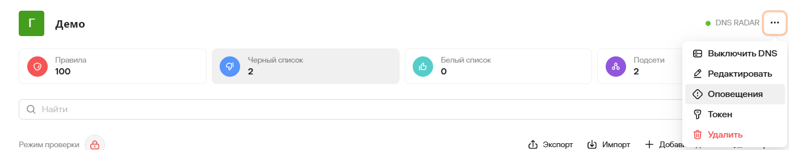
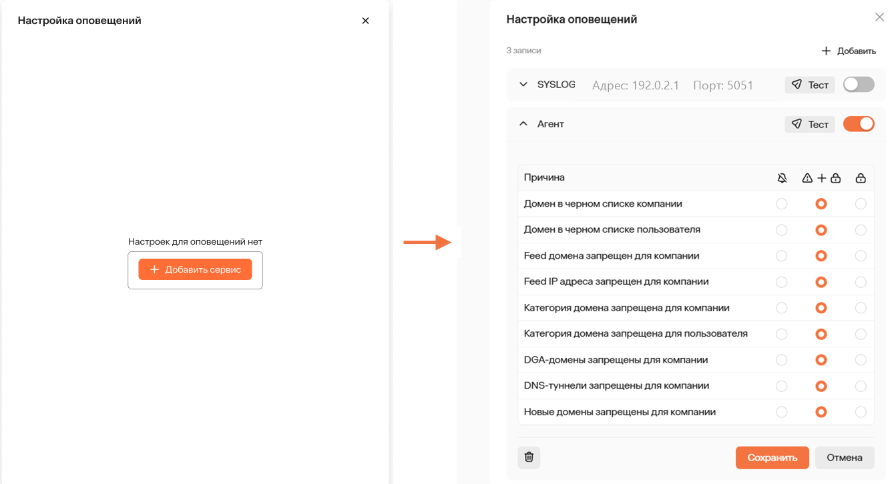
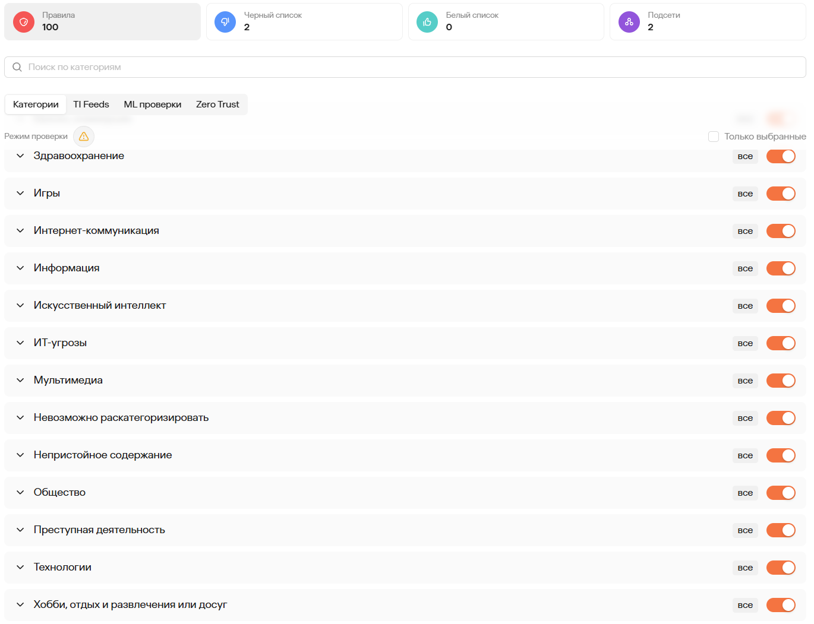
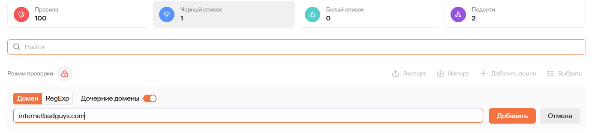
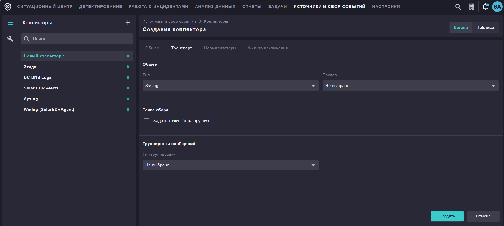
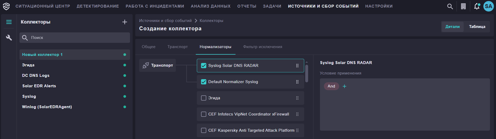
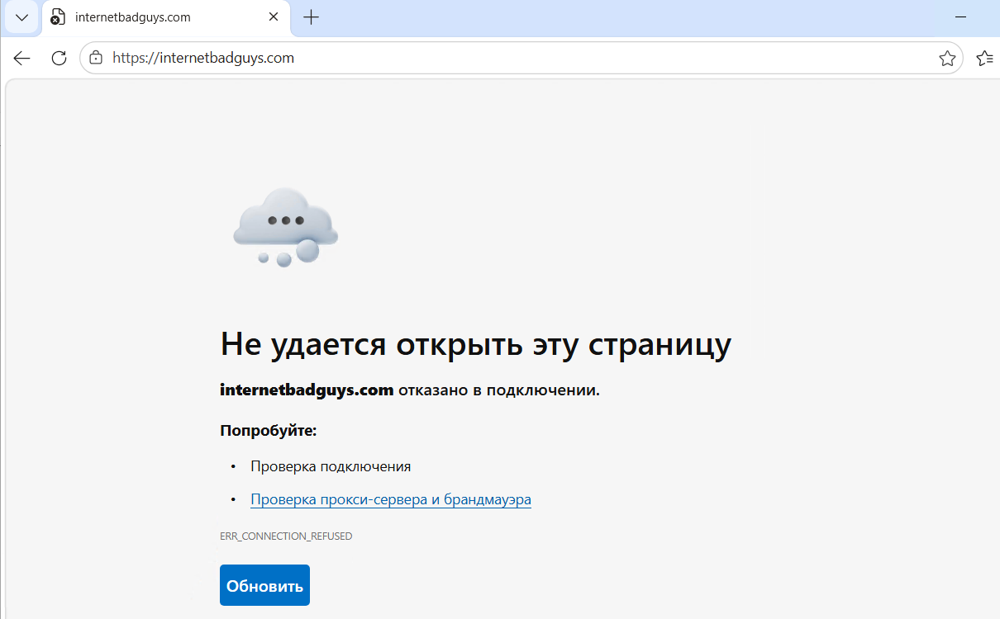
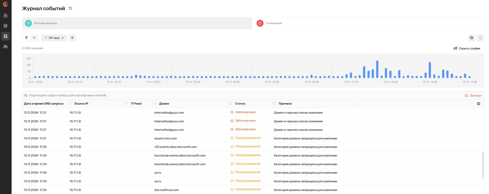
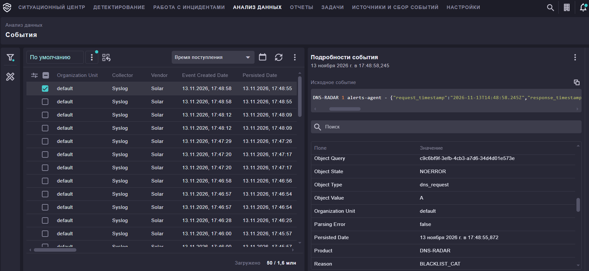

Интеграция Solar DNS RADAR и Solar SIEM¶
1. Варианты развёртывания Solar DNS RADAR¶
Solar DNS RADAR поддерживает три варианта развёртывания:
- Облачный (MSS) — локальные компоненты не разворачиваются: DNS-серверы компании направляют запросы на публичные proxy-серверы DNS RADAR, которые выполняют фильтрацию;
- Гибридный (SaaS) — в сети заказчика разворачивается локальный модуль (DNS-proxy), который фильтрует запросы и синхронизируется с облачным центром управления и базами угроз;
- Локальный (on-premise) — полностью автономная установка на мощностях заказчика (закрытый контур).
Подробнее о продукте — на странице Solar DNS RADAR и в официальной документации.
2. Варианты установки proxy-сервера DNS RADAR¶
- Прокси за DNS-сервером заказчика — DNS-сервер заказчика пересылает запросы на прокси; во внешний мир запросы уходят с EDNS-заголовками (ECS) — если поддержка ECS включена на DNS-сервере (см. настройки ниже). Применяется на любых вариантах развёртывания: on-premise, гибридном, облачном.
-
Прокси сбоку — на прокси перенаправляются запросы только части АРМов (настройка DNS передаётся по DHCP). Применим для on-premise и гибридного вариантов.
-
Прокси перед DNS-сервером заказчика — запросы всех АРМов и серверов идут через прокси. Применим для on-premise и гибридного вариантов.
Note
Локальный proxy-сервер фильтрует DNS-запросы по правилам платформы (чёрный/белый списки, категории, фиды, ML).
Прокси за DNS-сервером заказчика.
Все клиенты обращаются к DNS-серверу заказчика, который пересылает запросы на прокси:
Настройки DNS-сервера заказчика:
- условные пересылки (forwarders) — только на IP прокси;
- локальные зоны обслуживаются сервером напрямую, минуя прокси;
- включить EDNS Client Subnet (ECS) — иначе прокси видит IP DNS-сервера вместо IP клиента;
- DHCP раздаёт клиентам адрес DNS-сервера заказчика.
Note
В облачном варианте развёртывания роль прокси выполняют публичные серверы DNS RADAR — они указываются как рекурсивные (forwarders) на DNS-серверах заказчика напрямую.
Прокси стоит параллельно DNS-серверу заказчика; на прокси смотрят только выбранные АРМы (адрес DNS раздаётся по DHCP):
- upstreams прокси — DNS-серверы заказчика;
- гранулярность по хостам достигается настройкой DHCP (какие клиенты получают адрес прокси).
Note
В настоящей инструкции реализован этот вариант с модификацией (разделы 3–8):
Прокси перед DNS-сервером заказчика.
Прокси встаёт в разрыв перед DNS-сервером: запросы всех АРМов и серверов идут через прокси:
- DHCP раздаёт клиентам адрес прокси (вместо адреса DNS-сервера);
- upstreams прокси — DNS-сервер заказчика.
3. Установка прокси¶
В данной статье описан гибридный вариант развёртывания (SaaS) Solar DNS RADAR с установкой proxy-сервера сбоку, настройкой сервиса alerts-agent и включением оповещений для агента, которое обеспечивает пересылку событий в Solar SIEM по протоколу syslog.
Вариант proxy-сервера сбоку реализован с модификацией (DNS-пересыльщик перед прокси). Разворачивается выделенный DNS-пересыльщик (в примере dnsmasq, раздел 4), который принимает запросы от тестовых АРМов и пересылает их на прокси. Включение фильтрации для хоста сводится к смене адреса DNS на адрес пересыльщика.
Warning
Требуется установленный Docker. Образы прокси и alerts-agent распространяются через закрытый реестр контейнеров вендора — доступ к нему выдаётся вендором при подключении.
Создаём каталог, например /opt/dns-proxy и файл compose.yaml (службу alerts-agent добавим позднее на шаге 5):
services:
proxy:
container_name: proxy
image: registry.data.rt-solar.ru/4rays/secdns/proxy:v<версия>-public
command: serve -c /config/proxy.pkl
volumes:
- "./proxy.pkl:/config/proxy.pkl:ro"
network_mode: host
restart: unless-stopped
ulimits:
nofile:
soft: "65536"
hard: "65536"
Создаём /opt/dns-proxy/proxy.pkl:
amends "../pkl/config.pkl"
debug = false
log_level = "info"
proxy_id = "<уникальный-id-прокси>"
build_version = "<актуальная версия>"
jwt = "<токен Control Center>"
health_server {
host = "127.0.0.1"
port = "82"
}
server {
port = "53"
monitor_port = "9102"
amount_sockets = 4
amount_ml_models = 1
is_refused_on_not_found = false
check_google_zip_net_for_tunnel = true
private_addresses_ipv4 = List()
private_addresses_ipv6 = List()
forward {
upstreams = List("<корпоративный-dns>:53")
dns_client_read_timeout = 10
dns_client_write_timeout = 10
}
mlWhiteListSettings {
domains = List("1e100.net", "in-addr.arpa")
}
cache {
ttl = 30
}
rate_limiter {
cache_size = 2097152
record_ttl_sec = 60
rps_by_client = 1000
burst = 2000
}
sync_state {
service_url = "grpc-sync-state.stage.secdns.envs.4rays.private:443"
tls_enabled = true
}
sync_logs {
service_url = "grpc-sync-logs.stage.secdns.envs.4rays.private:443"
tls_enabled = true
}
clientDomainManager {
threshold_unique_subdomains = 8
ttl_window = 300
clean_internval = 60
}
}
Ключевые поля:
| Группа | Опция | Назначение |
|---|---|---|
| — | proxy_id |
идентификатор прокси (выдаётся вместе с JWT) |
| — | build_version |
версия сборки образа — обязателен, должен совпадать с версией образа (например, "3.3.16x-public") |
| — | jwt |
токен подключения к Control Center |
server |
port |
порт прослушивания DNS-запросов |
forward |
upstreams |
корпоративные DNS |
mlWhiteListSettings |
domains |
домены, исключённые из ML-анализа |
cache |
ttl |
время кэширования ответов, сек |
rate_limiter |
— | ограничение частоты запросов с одного клиента (rps_by_client, burst) |
clientDomainManager |
— | детект DNS-туннелей: порог уникальных поддоменов (threshold_unique_subdomains) за окно ttl_window |
sync_state / sync_logs |
service_url/ tls_enabled |
облако DNS RADAR: синхронизация правил и отправка журнала запросов |
4. DNS-пересыльщик (на примере dnsmasq)¶
В описываемой схеме между АРМами и прокси развёрнут DNS-пересыльщик: внешние запросы он отправляет на прокси RADAR. Для этого Тестовым АРМам указывается адрес пересыльщика как DNS-сервер.
Пересылку рассмотрим на примере использования dnsmasq.
Для настройки понадобится:
- пакет dnsmasq;
- IP-адрес прокси DNS RADAR — он станет единственным маршрутом
server=(хост, где развёрнут прокси, порт53); - имена сетевых интерфейсов хоста пересыльщика — если нужно явно ограничить прослушивание (
interface=,bind-interfaces); без них dnsmasq слушает все интерфейсы; - опционально — локальные записи зоны (
host-record/ptr-record), если пересыльщик должен сам отвечать за отдельные имена.
Пример конфигурации /etc/dnsmasq.d/radar.conf (базовый /etc/dnsmasq.conf остаётся штатным):
# Маршруты пересылки
no-resolv
server=<ip-прокси>
# EDNS Client Subnet: передавать адрес клиента на прокси (32/128 — полный IPv4/IPv6)
add-subnet=32,128
# Журнал запросов
log-queries
Ключевые моменты:
no-resolv— не использовать адреса из/etc/resolv.conf: апстримы задаются только директивойserver=;server=<ip-прокси>— маршрут по умолчанию: все запросы пересыльщик отправляет на прокси RADAR;log-queries— журнал запросов с адресом источника (query[A] example.com from <ip-АРМ>).
После изменения конфигурации выполняем: dnsmasq --test (проверка синтаксиса) и systemctl restart dnsmasq.
Note
Чтобы в Solar DNS RADAR был виден ip хоста, отправляющего запрос, должна быть задана опция add-subnet=32,128. Тогда каждый запрос уходит на прокси с EDNS-опцией (ECS), содержащей адрес АРМа: в RADAR он отображается в карточке события в поле «EDNS подсеть клиента». Без этой опции источником всех событий будет адрес пересыльщика.
5. Установка alerts-agent и пересылка по протоколу syslog в SIEM¶
alerts-agent добавляется второй службой в тот же файл compose.yaml, где находится proxy, на том же уровне вложенности (в примере это /opt/dns-proxy/compose.yaml):
alerts-agent:
container_name: alerts-agent
image: registry.data.rt-solar.ru/4rays/secdns/alerts-agent:v<версия>-public
network_mode: host
restart: unless-stopped
environment:
- SYSLOG_AGENT_TRANSPORT_ADDRESS=<адрес облака DNS RADAR>:443
- SYSLOG_AGENT_TRANSPORT_TLS_ENABLED=true
- SYSLOG_AGENT_TRANSPORT_TOKEN=<jwt>
- SYSLOG_AGENT_SYSLOG_SERVERS=udp://<адрес-коллектора-siem>:5051
ulimits:
nofile:
soft: "65536"
hard: "65536"
Переменные окружения:
| Переменная | Назначение |
|---|---|
SYSLOG_AGENT_TRANSPORT_ADDRESS |
облако DNS RADAR (sync-alerts): агент подключается наружу по TLS, входящие порты не требуются |
SYSLOG_AGENT_TRANSPORT_TOKEN |
тот же токен, что в proxy.pkl |
SYSLOG_AGENT_SYSLOG_SERVERS |
приёмник syslog в SIEM: адрес коллектора и порт |
Агент шлёт события с IP хоста (network_mode: host). В SIEM источником будет этот адрес.
Note
5051 — порт syslog-коллектора SIEM по умолчанию, если для точки сбора не задан переопределённый порт.
6. Настройка правил и оповещений в DNS RADAR¶
Оповещения для агента¶
Чтобы события о срабатываниях правил попадали в alerts-agent, в консоли DNS RADAR нужно создать правило оповещений:
- Перейти в Компания → меню «...» → Оповещения.

- В окне «Настройка оповещений» нажать Добавить сервис и выбрать тип доставки Агент — дополнительные параметры (IP, порты не задаются, агент сам подключается к облаку по HTTPS. Настраивается в
compose.yamlна хосте с прокси). Затем для сервиса агента выбрать Причины оповещений — например, «Домен в черном списке компании» — и режим: Оповещать при блокировке или Оповещать при блокировке и обнаружении.

- Для проверки нажать Тест — придёт пробное уведомление; отправка включается переключателем рядом с правилом.
Агент принимает уведомления по защищённому протоколу (VPN-туннель не требуется) и пересылает их по syslog в SIEM. Без созданного правила оповещений события в SIEM не доставляются.
Правила фильтрации¶
Правила создаются в консоли DNS RADAR в разделе Правила (уровень компании/тенанта). Сводка по активным правилам выводится карточками: Правила, Чёрный список, Белый список, Подсети.

Основные инструменты раздела:
- Категории — готовые группы ресурсов (ИТ-угрозы, Непристойное содержание, Мультимедиа и т.д.). Категория или отдельная группа включается переключателем; режим проверки (блокировка/предупреждение) задаётся рядом;
- TI Feeds — подключаемые каналы данных об угрозах;
- ML-проверки и Zero Trust — дополнительные механизмы анализа (новые/малоизвестные домены).
Чёрный список¶
Самый быстрый способ проверить фильтрацию — добавить домен в Чёрный список:
- Открыть вкладку Чёрный список и нажать Добавить домен.
- Указать домен (например,
internetbadguys.com) и выбрать тип записиDomain; поддерживается такжеRegExp. - Опция «Дочерние домены» распространяет правило на все поддомены.
- Выбрать режим: Блокировать или Предупреждать.

Список можно переносить между инсталляциями кнопками Экспорт/Импорт (JSON).
Note
Правила действуют на всю компанию (тенант). Гранулярность по хостам достигается только подсетями: раздел Подсети позволяет выделить группу адресов, а отдельные правила — через отдельные тенанты.
Note
Порядок применения: сначала проверяется Белый список (разрешает в обход остальных правил), затем Чёрный список, затем категории, фиды и ML.
7. Настройка коллектора в SIEM¶
- Перейти на вкладку Источники и сбор событий → Коллекторы и создать коллектор с типом Syslog (по дефолту используется порт 5051):

- На вкладке Нормализаторы включить нормализатор Syslog Solar DNS RADAR (поставляется в комплекте SIEM). Нормализатор должен располагаться выше
Default Normalizer Syslog.

8. Запуск и проверка¶
Команды выполняются на хосте, где поднят прокси (раздел 3):
В логах при успешном старте обоих контейнеров должны отсутствовать ошибки.
-
Убедиться, что тестовый домен добавлен в Чёрный список (см. раздел 6). Для теста используем домен
internetbadguys.com. Прокси забирает правило автоматически (обычно в течение минуты). -
Открыть
internetbadguys.comв браузере на клиенте — соединение отклоняется:

- Проверить доставку событий: запись в Журнале событий RADAR и событие в SIEM.
Пример срабатывания чёрного списка в Журнале событий RADAR: запросы к internetbadguys.com со статусом Заблокирован, причина — «Домен в черном списке компании»:

Событие о блокировке, доставленное alerts-agent в SIEM, причина BLACKLIST_CAT — нормализатор Syslog Solar DNS RADAR разобрал исходное syslog-сообщение в поля:
